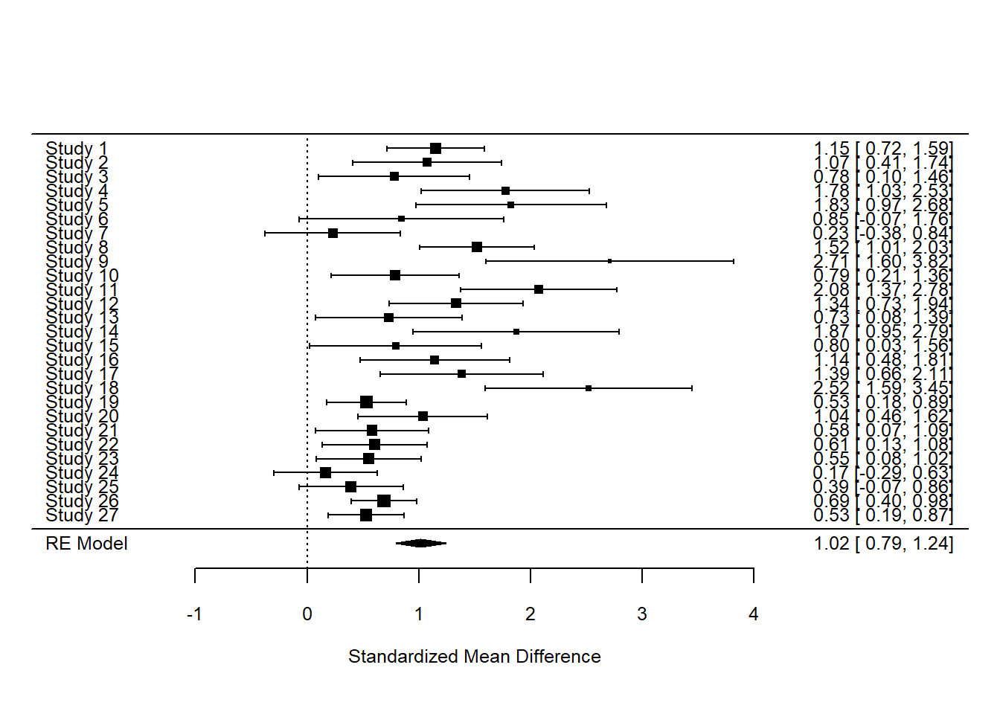

<<<<<<< HEAD
Meta-Analysis assignment
=======
Metaanalysis assignment
>>>>>>> 6c2b8c1746741a6e486236f1ab06595c700c90b8
<<<<<<< HEAD
Meta-Analysis assignment
=======
Metaanalysis assignment
>>>>>>> 6c2b8c1746741a6e486236f1ab06595c700c90b8
Author
Daniel Śliwiński
Published
June 11, 2023
<<<<<<< HEAD
Output from Meta-Analysis
=======
Output from metanalysis
>>>>>>> 6c2b8c1746741a6e486236f1ab06595c700c90b8
Random-Effects Model (k = 27; tau^2 estimator: REML)
tau^2 (estimated amount of total heterogeneity): 0.2511 (SE = 0.0967)
tau (square root of estimated tau^2 value): 0.5011
I^2 (total heterogeneity / total variability): 76.54%
H^2 (total variability / sampling variability): 4.26
Test for Heterogeneity:
Q(df = 26) = 92.7894, p-val < .0001
Model Results:
estimate se zval pval ci.lb ci.ub
1.0175 0.1143 8.8997 <.0001 0.7934 1.2416 ***
---
Signif. codes: 0 '***' 0.001 '**' 0.01 '*' 0.05 '.' 0.1 ' ' 1
<<<<<<< HEAD
=======
```{r fig.cap="Forest Plot"}# Create a forest plotforest(res)```
>>>>>>> 6c2b8c1746741a6e486236f1ab06595c700c90b8

Forest Plot
Meta-Analysis Results
The random-effects model meta-analysis included a total of 27 studies. The estimated amount of total heterogeneity, represented by tau-squared, was 0.2511 (SE = 0.0967), and tau (the square root of tau-squared) was 0.5011. This indicates a substantial level of heterogeneity between studies.
The I-squared statistic, which describes the percentage of variation across studies that is due to heterogeneity rather than chance, was 76.54%. This suggests that a substantial proportion of the variability in effect sizes is due to true differences between studies, rather than sampling error.
The H-squared statistic, representing the ratio of total variability to sampling variability, was 4.26, supporting the presence of substantial heterogeneity.
The Q statistic was 92.7894 with 26 degrees of freedom, and the associated p-value was < .0001, indicating that the amount of heterogeneity is statistically significant.
The overall effect size estimate was 1.0175 with a standard error of 0.1143, yielding a z-value of 8.8997 and a p-value of < .0001, which is highly significant. The 95% confidence interval for the effect size ranged from 0.7934 to 1.2416.
These results suggest that there is a significant and sizable effect of the factor under investigation, but also that there is considerable variation in this effect across studies. Further exploration of potential moderators or sources of heterogeneity are definitely appropratie in this case, but for the sake of this short assignment I will not post them here :).
Please forgive me this long deadline overkill, I can do anything to adjust for this delay.